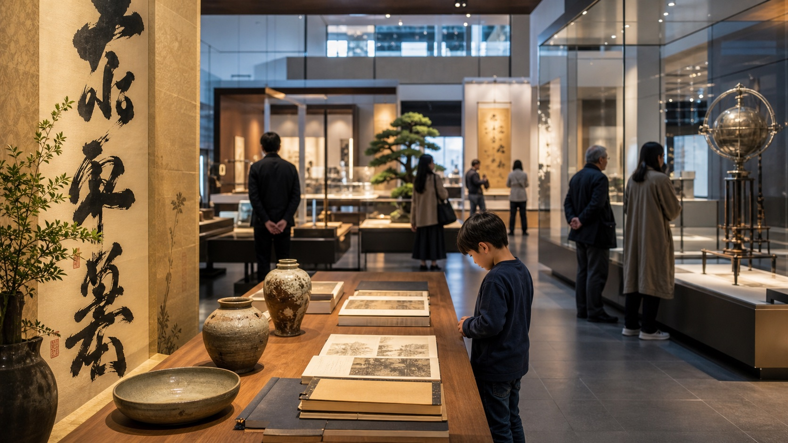

Chōyō no Sekku, celebrado em 9 de setembro, é uma das antigas festas sazonais do calendário japonês. Também é conhecido como Kiku no Sekku, a festa dos crisântemos.

Por que 9 de setembro
Na tradição de origem chinesa assimilada pelo Japão, números ímpares eram associados a força yang. O nono dia do nono mês concentra essa repetição.
Como aparece hoje
A data não é feriado nacional e não ocupa o cotidiano como Ano Novo ou Obon. Ainda assim, sobrevive em exposições de crisântemos, referências culturais e linguagem sazonal.